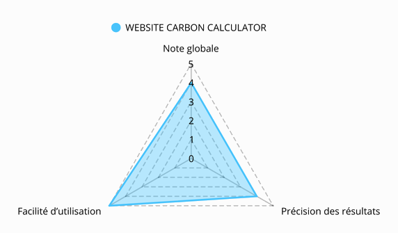

Tableau de comparaison des outils
| CRITÈRE | WEBSITE CARBON CALCULATOR | ECO INDEX | SCAPHANDRE | LIGHTHOUSE | DEBUG BEAR |
|---|---|---|---|---|---|
| URL | https://www.websitecarbon.com/ | https://www.ecoindex.fr/ | https://github.com/hubblo-org/scaphandre | https://pagespeed.web.dev/?hl=fr | https://www.debugbear.com/test/website-speed |
| Gratuité | Oui | Oui | Oui | Oui | Oui |
| Facilité d'utilisation | 5 | 4 | 3 | 4 | 5 |
| Précision des résultats | 4 | 4 | 3 | 3 | 4 |
| Critères évalués | Quantité de données nécessaires pour charger la page, transmission des données | Nombre de requêtes, poids de la base, nombre d'éléments | Puissance, consommation du CPU (avec le RAPL "Running Average Power Limit") | Performance, accessibilité, bonnes pratiques, SEO | Poids de la page, temps d'exécution |
| Possibilité d’export des résultats | Non(on peut juste copier le lien de la page) | Non(on peut juste copier le lien de la page) | Oui | Oui | Oui |
| Documentation/Guide disponible | Oui | Oui | Oui | Oui | Oui |
| Intégration possible | Non | Non | Oui | Oui | Oui |
| Impact environnemental(selon Website Carbon Calculator) | A+ (0.01g de CO2 par visite) Voir les résultats | A+ (0.01g de CO2 par visite) Voir les résultats | A+ (0.04 de CO2 par visite) Voir les résultats | E (0.29 de CO2 par visite) Voir les résultats | |
| Originalité/Points forts | Très bonne UI/UX, facile à manipuler, sans trop d'informations et pas de pubs | Bonne UI/UX, résultats et démarches bien expliqué, pas trop d'informations et pas de pubs | Projet open source | Étudie aussi les bonnes pratiques de la page et donne des conseils d'optimisation | Utilise Lighthouse pour compléter ses résultats |
| Limites/Points faibles | Manque un peu de précision, il ne prend en compte que le CPU, et n'est pas adapté pour des personnes sans connaissances en développement. | Les résultats peuvent changer en fonction de la performance du PC ou du navigateur utilisé | Version gratuite limitée | ||
| Note globale | 4 | 4 | 3 | 4 | 4 |
Il est important, notamment en tant que développeur, de pouvoir mesurer l'empreinte carbone des sites et
applications qu'on développe. Ces cinq outils permettent,
de manière plus ou moins précise, de mesurer cela à partir d'une url selon différents critères.
Website Carbon Calculator permet, par exemple, de connaitre la quantité de CO2 produit à chaque visite du site en se basant sur les ressources nécessaires pour charger la page et les transmissions de données. Une note entre A+ et F est attribuée en fonction du résultat. C'est un outil peu précis, mais très simple d'utilisation qui donne une idée approximative de l'empreinte carbone d'un site. Eco Index est à peu près similaire. Il se base en plus sur le poids de la page (en Mo) et sur le nombre d'éléments et de requêtes. Ces deux outils sont facilement accessibles et très intuitifs.
Au contraire, Scaphandre est un outil assez complexe qui requiert quelques compétences en informatique pour pouvoir l'employer. Par contre, c'est un projet open source très complet et encore en développement. Il peut être intégré à des projets grâce à ses résultats exploitables et sa documentation complète.
Lighthouse, en plus de mesurer la performance et la consommation de la page, étudie aussi les bonnes pratiques, le SEO et donne des conseils assez précis d'optimisation du site. Il est moins efficace pour mesurer l'impact environnemental, car ses résultats peuvent changer en fonction du matériel utilisé.
Debug Bear est un outil plus complet qui utilise Lighthouse pour compléter ses résultats. Il propose aussi des améliorations, mais sa version gratuite est limitée alors que tous les autres outils ne nécessitent aucune dépense.
Website Carbon Calculator permet, par exemple, de connaitre la quantité de CO2 produit à chaque visite du site en se basant sur les ressources nécessaires pour charger la page et les transmissions de données. Une note entre A+ et F est attribuée en fonction du résultat. C'est un outil peu précis, mais très simple d'utilisation qui donne une idée approximative de l'empreinte carbone d'un site. Eco Index est à peu près similaire. Il se base en plus sur le poids de la page (en Mo) et sur le nombre d'éléments et de requêtes. Ces deux outils sont facilement accessibles et très intuitifs.
Au contraire, Scaphandre est un outil assez complexe qui requiert quelques compétences en informatique pour pouvoir l'employer. Par contre, c'est un projet open source très complet et encore en développement. Il peut être intégré à des projets grâce à ses résultats exploitables et sa documentation complète.
Lighthouse, en plus de mesurer la performance et la consommation de la page, étudie aussi les bonnes pratiques, le SEO et donne des conseils assez précis d'optimisation du site. Il est moins efficace pour mesurer l'impact environnemental, car ses résultats peuvent changer en fonction du matériel utilisé.
Debug Bear est un outil plus complet qui utilise Lighthouse pour compléter ses résultats. Il propose aussi des améliorations, mais sa version gratuite est limitée alors que tous les autres outils ne nécessitent aucune dépense.

Décryptage technique et pédagogique de Website Carbon Calculator
Website Carbon Calculator est ou outil développé par Wholegrain Digital, une agence web anglaise engagée
dans la conception web durable.
Il permet de mesurer la quantité de CO2 produite à chaque visite d'une page web. Il peut être utilisé
par les propriétaires des sites, les développeurs
pour estimer leur impact carbone ou encore par des personnes souhaitant avoir une idée de l'impact de
leur activité en ligne. C'est un outil essentiel de mesurer
l’impact (même de façon approximative) pour pouvoir le réduire et être en mesure d'obsérver une
amélioration.
Website Carbon Calculator utilise l'url de la page pour ensuite la charger, mesurer les ressources
nécessaires pour le chargement et le transfert de données.
Il mesure la quantité d'énergie utilisée et vérifie si cette énergie est "verte" via le Green Web
Foundation Directory.
Pour calculer l'empreinte carbone, le site utilise le SWDM (Sustainable Web Design Model). Ce modèle
estime la consommation d'énergie d'une certaine quantité de
données, puis les émissions de CO2 basées sur cette consommation d'énergie.
Cela est calculé pour la partie hébergement, réseau et transfert de données puis réception côté client.
Le modèle SWDM s'appuie sur des études sur l'énergie du réseau et les transmissions de données et sur le
Green Web Foundation Directory.
En se basant sur toutes ces données, le site donne une estimation de l'empreinte carbone de chaque
visite de la page en g de CO2 et une note
entre A+ et F.
Il donne aussi des équivalents de ce résultat et des ressources permettant de rendre son site plus vert.
Site testé : https://www.laval.fr/accueil
On entre l'url du site dont on veut estimer l'empreinte carbone : On obtient une note entre A+ et F (ici E). Plus la note se rapproche de A+ plus le site est "vert" et
produit peu de CO2.
On obtient une note entre A+ et F (ici E). Plus la note se rapproche de A+ plus le site est "vert" et
produit peu de CO2.On a aussi une comparaison avec toutes les notes des autres sites. Notre site a une note moins bonne que 67% des sites examinés.
 On peut avor une approximation du CO2 (en g) produit à chaque visite de la page :
On peut avor une approximation du CO2 (en g) produit à chaque visite de la page :
 Grâce au Green Web Foundation Directory, on peut savoir si l'hébergement du site consomme beaucoup d'énergie
:
Grâce au Green Web Foundation Directory, on peut savoir si l'hébergement du site consomme beaucoup d'énergie
:
 Pour finir, quelques comparaisons pédagogiques permettent de donner une idée concrète de l'impact de chaque
visite de ce site :
Pour finir, quelques comparaisons pédagogiques permettent de donner une idée concrète de l'impact de chaque
visite de ce site :


Website Carbon Calculator est un outil intéressant, cependant il possède certaines limites. Tout d'abord,
c'est un modèle estimatif, il ne réalise pas de mesures,
seulement des calculs et des estimations. Il est principalement basé sur le poids de la page et peut manquer
des ressources externes, des calculs tardifs ou côté serveur.
Il ne prend pas en compte l'impact de la fabrication du matériel, l'énergie consommée en veille ou les
intéractions sur le site.
Par conséquent, cet outil peut être utilisé à des fins pédagogiques pour sensibiliser, comparer, mais pas
pour des analyses précises ou comme référence fiable.